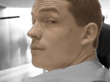

|
Drums - Kelly Mills
Kelly has been hitting the skins since middle school, when he fell in love
with jazz greats such as Billy Cobham, Buddy Rich, and Max Roach. Rock
lessons through high school and jazz lessons in college set him up to fall
in love with funk and it's faster, jazzier cousin, fusion. A few of his
eclectic musical influences are Mike Clark (Headhunters), Herbie Hancock,
George Benson, Stevie Wonder, Paul Chambers, George Gershwin, Steely Dan,
The Talking Heads, Radiohead, Beck, George Clinton and Parliament
Funkadelic, The Rza, the Pixies, and the Beatles. His favorite producers
are Teo Macero, Rick Rubin, Nigel Godrich, Dan the Automator, Amon Tobin,
and DJ shadow. Kelly lives in Gaithersburg, Md. and is in the process of
moving to Baltimore, Md.
Guitar/Bass/Keys - Bing Kung
Bing "Thunderball" Kung (aka Buddha Boy Sinatra) started his musical career when he was 7 years old,
when he was forced to learn classical piano and theory. After kicking Mozart and Chopin to the curb after 8 years
(with much respect), he decided to electrify his musical interests with influences stemming from Jimi Hendrix to Eric
Clapton on the guitar. After playing guitar for various bands throughout high school and college (at the University of
Maryland in College Park), jazz, soul, and funk became the driving force in his musical repetoire. Main influences include
G-love and Special Sauce, Prince, Outkast, Radiohead, any Motown artists, Norah Jones, Rachmaninoff, and his goddess Lauryn
Hill. Thunderball's weapons of choice are his Strat Plus, Korg Triton Keyboard, and Musicman Bass. Bing resides in Rockville,
Maryland with his daytime gig as an Electrical Engineer.
Vocals/Guitar/Bass - Aidan Ryan
Aidan "Playboy" Ryan learned John Prine and The Band songs from his dad growing up. He played in coffee houses around his college town of Baltimore, honing a raw delivery and obscure lyrical bent. When not teaching Tech Ed in 7th grade he can be found listening to Bob Dylan, Warren Zevon, Neil Young, and Yo La Tengo.